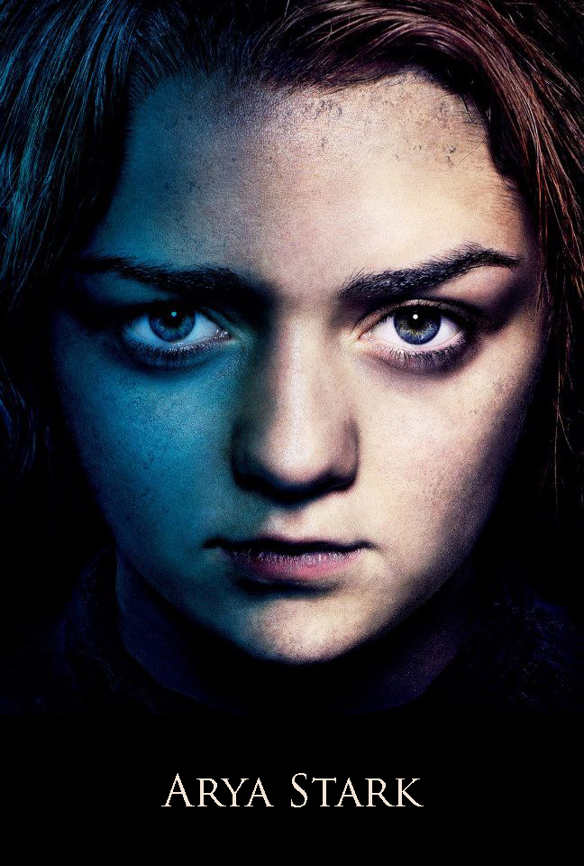

|

|
Arya Stark
Arya Stark is the third child and second daughter of Lord Eddard and Lady Catelyn Stark. She is nine at the start of A Game of Thrones. She has five siblings: brothers Robb, Bran, Rickon, half-brother Jon Snow, and older sister Sansa.
Like some of her siblings, she sometimes dreams that she is a direwolf.[1] Her own direwolf is Nymeria, who is named in reference to the Rhoynar warrior-queen of the same name.
Arya is the only character to have at least one POV chapter in each of the five books.
Character and Appearance
Arya is a spirited girl interested in fighting and exploration, unlike her older sister, Sansa. Arya wants to learn how to fight with a sword and ride in tourneys, to the horror of Sansa, who enjoys the more traditional pursuits of a noblewoman. Arya is particularly close to her half brother Jon Snow, who encourages her martial pursuits. Jon Snow gives Arya her first sword, Needle, as a gift. Throughout her travels, Arya displays great resourcefulness, cunning, and an unflinching ability to accept hard necessity. She is said to take after her fiery aunt Lyanna in temperament.
Arya appearance is more Stark than Tully, with a long face, grey eyes, and brown hair. She is skinny and athletic. At the start of the story, she is generally regarded as plain, as exemplified by her nickname "Arya Horseface", and often mistaken for a boy. However, there are instances of her being called pretty, compared to the beautiful Lyanna[2], and catching the eye of men later in the books. In Braavos the Kindly Man says she has a pretty face. For more images see here.
She is left-handed, quick, and dexterous. She learned basic swordplay in the Braavosi Water Dancer tradition and later learned how to handle knives. She is a warg, entering her direwolf Nymeria in her dreams, as well as cats in Braavos. She received a noble's education at Winterfell and is said to be good with mathematics and an excellent horse rider. She has proved to know at least a bit of High Valyrian. She also speaks Braavosi with a strong accent and has put some effort into learning the language, under orders from the Kindly Man. She has a quick and curious mind and a pragmatic outlook.
History
Arya is the youngest daughter and third child of Lady Catelyn and Lord Eddard Stark, head of House Stark and Warden of the North. She was born soon after Eddard Stark's return from the Greyjoy Rebellion and raised at Winterfell. Arya has an older sister Sansa. She has an older brother Robb and two younger brothers Bran and Rickon. She also has a bastard half-brother Jon Snow.
In her nine years, she has quickly shown herself to be an independent and wild-spirited girl. Unlike her sister, she rejects the notion that she must become a lady and marry for influence and power, showing no interest in the womanly arts of dancing, singing, and sewing; instead she revels in fighting and exploring, to the bemusement of her tutor Septa Mordane and parents. Known affectionately as "Arya Underfoot" by the staff and servants of Winterfell.
|